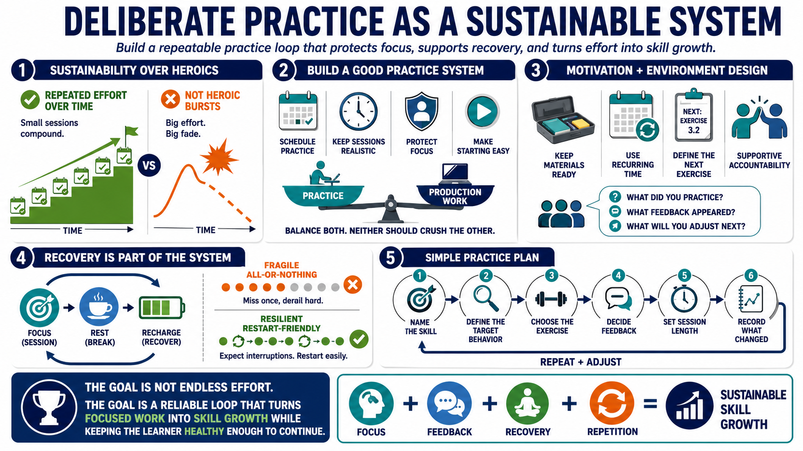

Building a Sustainable Practice System
Connecting to LMS... Progress: in progress

Narration
Deliberate practice works best as a sustainable system. Skill growth usually requires repeated effort over time, not occasional bursts of heroic intensity. A good system schedules practice, chooses realistic session length, protects focus, and makes the next practice action easy to start. It also balances deliberate practice with real production work so improvement does not compete with every urgent demand.
Motivation and environment design matter. Reducing friction can be as simple as keeping practice materials ready, defining the next exercise before the session begins, or reserving a recurring time. Accountability can help when it is supportive and specific. A peer, coach, or team can ask what was practiced, what feedback appeared, and what adjustment will happen next.
Recovery belongs in the system. Deliberate practice is effortful, and effortful work cannot be sustained indefinitely without rest. Short focused sessions often beat long, distracted ones. All-or-nothing routines are fragile because one missed session becomes a reason to quit. Sustainable plans expect interruptions and make it easy to restart without treating the whole effort as failed.
A practice plan should be simple enough to use. Name the skill, define the target behavior, choose the exercise, decide how feedback will happen, set the session length, and record what changed. Then repeat with adjustment. The goal is not endless effort. The goal is a reliable loop that turns focused work into skill growth while keeping the learner healthy enough to continue.